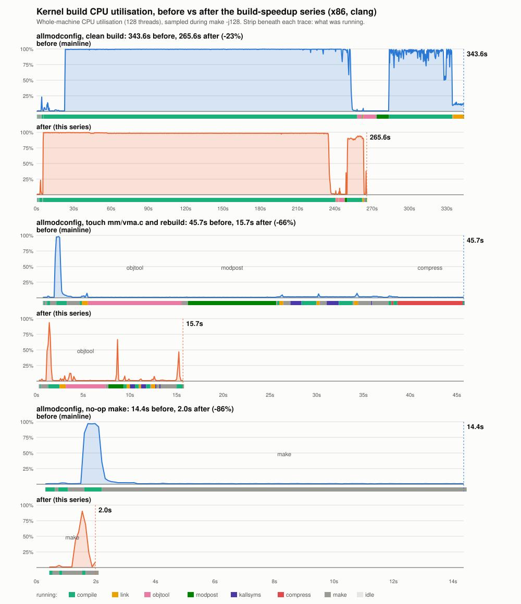

Accelerating the kernel's build process
In the cover letter to his 23-part patch series, Stoakes described his tool use for this work:
An LLM was used to first determine where the bottlenecks were then to figure out how to improve them.It generated a lot of code, much of it hideous.
I extensively audited and rewrote a lot of it, and heavily edited commit messages, the cover letter and comments.
The results of this work were summarized as "allmodconfig builds up to
36% faster, incremental builds up to ~70% faster, and noop builds up to
~90% faster
".
How to accelerate kernel builds
Getting to that point required a lot of changes to the build process. Consider, for example, the kallsyms program, which runs during the build to create a table of all of the symbols (function and variable names) in the kernel. There are a lot of symbols, so this table can be large. Since the table can reside in memory, there is a strong incentive to make it smaller; kallsyms thus implements a special compression algorithm, described this way in the source:
Table compression uses all the unused char codes on the symbols and maps these to the most used substrings (tokens). For instance, it might map char code 0xF7 to represent "write_" and then in every symbol where "write_" appears it can be replaced by 0xF7, saving 5 bytes.
As Stoakes (or his LLM) observed, though, kallsyms performs this compression in a highly inefficient way, trying to perform each token replacement in every one of over 150,000 symbols, even though any given token will only appear in a small subset of them. This patch from the series tracks which tokens appear in which symbols, so that substitutions are only attempted in places where they will succeed. This change alone speeds kernel builds by 2-6%.
Even then, though, kallsyms outputs its table as a 37MB
assembly-language file that must then be passed to the assembler to be
turned into binary data. This
patch causes kallsyms to output the binary data in a form that
the assembler can pull in directly, reducing build times by up to 11% in
the best case. Linus Torvalds applauded
this change, but suggested that it could go further: kallsyms
could simply output an ELF object, taking the assembler out of the picture
entirely. Nobody, he suggested, would normally want to write the code
needed to make kallsyms behave that way but, since an LLM is
involved, "the obvious step would be to just ask the little helper bot
to switch the whole kallsyms to using libelf-devel and writing an object
file directly
".

Sometimes, though, the use of nm can be avoided altogether. The build process currently runs that tool on kernel objects, feeding the output to the mksysmap sed script to create data suitable for feeding to kallsyms. This patch replaces that script with new kallsyms code that reads ELF files directly and extracts the needed data, bypassing nm entirely. In the best case, this change improves build times by 12%, though the improvement seen in most cases is significantly more modest. Another modest improvement is had by not allocating the .modinfo section in the kernel image. This patch, which caches information about whether each object file is part of a module, speeds build performance, especially in larger directories.
The kernel contains a lot of header files, with the result that object
files can have a huge number of dependencies. The make utility,
it seems, spends a lot of time checking these dependencies in a
single-threaded mode, slowing down the build, especially in cases where
little has changed. This
patch adds a new utility, called depcheck, that performs
dependency checking in a more efficient way, taking care to only stat()
each file once. This change may not last, though: Torvalds suggested
that much of the trickery used to make dependency checks work properly may
no longer be needed: "That whole thing is from a quarter century ago,
and nobody has dared look at that code since
". So the better solution
might be to just remove it entirely.
Then, there is this patch, which aims to reduce the number of times that the build process invokes the compiler to probe whether a specific feature is supported. The compiler and its supported options do not change over the course of a kernel build, so it makes sense to remember which options are supported after querying them once. A new set of configuration options is added as a way of remembering and testing that information.
The modpost tool postprocesses symbol versions in loadable modules; that work involves calculating a lot of MD4 hashes. In current kernels, the data to be hashed is accumulated one byte at a time; this patch does the hashing on a per-file basis, yielding a build-time improvement of up to 6%. However, this functionality is being removed from modpost, so this change will be dropped from the series. This patch adds more caching to modpost, reducing build times by up to 12% in some cases. Finally, modpost generates a C file containing a descriptor for each module it handles; that file must then be compiled into an object file. As described in this patch, the resulting overhead is not small:
These files are compiled like any other kernel C file with all of the -include preamble, as well as including linux/module.h, header dependencies generated by fixdep of a few hundred headers, an objtool run and if LTO is being performed, a link is performed to generate native code.On an x86-64 allmodconfig build 11,189 *.mod.c files are built, each taking ~0.24s of CPU time to compile, and module finalisation as a whole 6,300 CPU seconds, or 64 seconds of wall time when run over 128 threads.
Changing modpost to output assembly code, thus avoiding the compiler step, removes this overhead, speeding an allmodconfig build by 11% (and no-op builds by much more). Nobody will complain about an improvement like this but, again, Torvalds suggested that an even better approach would be to generate the object file directly and remove the assembler from the process as well. Beyond any speedups, he said, that change would remove the .mod.c files from the build entirely.
Other changes include this patch, which causes the finalization step at the end of each module build (which runs in milliseconds for any given module) to be batched, overcoming the inability of make to dispatch thousands of little tasks efficiently. Another patch parallelizes the hashing of files in modpost. There is a rather more complex patch that adds parallelization to the objtool utility, with large effects on some builds.
Then, there is the matter of Rust. Currently, the kernel's Rust crates are compiled serially, one at a time. That slows the kernel build considerably now, and will only slow things further as the amount of Rust code grows. This patch uses the -Zthreads option to rustc to build the crates in parallel; that option was added in Rust 1.84, which is (slightly) older than the minimum version (1.85) required by the kernel. The patch will also attempt to use the future --jobs option if it is available. Björn Baron warned, though, that parallel builds in rustc have not fully stabilized, so it is not clear that this mode should be used by default. This other patch, which allows Rust code to be built in parallel with the building of C code, should be rather safer.
The final patch in the series causes the build system to use pigz to compress the kernel if it is available. pigz is able to perform compression in parallel, significantly reducing the time required to complete this step.
In summary
See the plot (above) for another look at how these patches affect kernel-build times. All told, they add up to a significant reduction in the time required to build a kernel. It seems unlikely that developers will complain much about that. As long as they do not introduce build problems (and only the parallel Rust change appears to have any risk of doing that), there should not be much opposition to their merging.
Naturally, it was necessary to try it out. On my system, which is better suited to article writing than fast builds, a full kernel build with an empty ccache reliably takes about 960 seconds. With this patch series applied, that time drops to about 860 seconds (both are wall-clock time, the CPU-time numbers are quite a bit higher). That is roughly a 10% decrease in build time. The clean-ccache case was chosen because it is easily reproducible, but it is also dominated by actual compile time and is the scenario likely to show the least improvement. With a fully populated ccache, the patches made a difference of a few seconds in a roughly 90-second build.
At any given time, there must be an impressive number of machines
performing kernel builds all over the planet. Developers will be running
some of those, but there are probably far more in the many
continuous-integration systems that are running. So build-time
improvements may save more than developer time; they will reduce the carbon
impact of the development process overall. This work, it seems, should
have been undertaken long ago. One wonders what other savings may be
waiting for a suitably motivated developer to take a close look.
| Index entries for this article | |
|---|---|
| Kernel | Build system |
Posted Sep 11, 2026 15:06 UTC (Fri)
by shemminger (subscriber, #5739)
[Link] (28 responses)
Posted Sep 11, 2026 15:32 UTC (Fri)
by jpeisach (subscriber, #181966)
[Link] (11 responses)
Posted Sep 12, 2026 0:33 UTC (Sat)
by alx.manpages (subscriber, #145117)
[Link] (8 responses)
Posted Sep 12, 2026 11:04 UTC (Sat)
by mb (subscriber, #50428)
[Link] (4 responses)
I don't touch these things often enough to really remember the basics well.
Posted Sep 12, 2026 13:04 UTC (Sat)
by alx.manpages (subscriber, #145117)
[Link] (3 responses)
I'm not so sure about that.
Make has many weird things in the basics that I frequently have to lookup or ask an AI for. Sure, there are language features that are not known by people. But they are easily searchable. My common steps: That leads us to the documentation of What did the | in rules mean again? The same process would bring us to the answer. This time, the first appearance of How exactly does this rule match?
And why on earth does my rule not match? This is certainly more complex. GNU make(1) has VPATH, vpath??!! Similar as the first two questions, this can be found in the manual quickly. Nevertheless, I agree that The good news is I think the same of I don't touch these things often enough to really remember the basics well. Compare the above, which at least is easy to find documentation for, versus "why is autotools/CMake/else doing this?" Those tools rely on implicit behavior for most things, so most often, the question is not "how does this weird Let alone the recipe tab vs space insanity. At least, again, this is something relatively well known.
Posted Sep 14, 2026 13:16 UTC (Mon)
by cortana (subscriber, #24596)
[Link] (2 responses)
Not all manuals have good indices sadly but for those that do this is an invaluable time saver.
Posted Sep 14, 2026 14:41 UTC (Mon)
by alx.manpages (subscriber, #145117)
[Link] (1 responses)
Yeah, it's just that I (and many others) don't know how to use info(1). :/ The good news is that we can pipe to less(1), and use the usual navigation tools of less(1) --less powerful than info(1), but more well-known--.
Posted Sep 14, 2026 19:22 UTC (Mon)
by rschroev (subscriber, #4164)
[Link]
Posted Sep 12, 2026 14:34 UTC (Sat)
by grmnsftphr (subscriber, #178591)
[Link]
Posted Sep 14, 2026 17:50 UTC (Mon)
by Cyberax (✭ supporter ✭, #52523)
[Link] (1 responses)
Posted Sep 14, 2026 21:29 UTC (Mon)
by alx.manpages (subscriber, #145117)
[Link]
I can't read even the simplest CMakeLists.txt. :)
> Every time I needed to debug a complex Make build, I ended up cargo-culting it and/or just rewriting it in something sane[r] like CMake.
The exact same thing happens to me with CMake/autotools/..., with the exception that I can't read even the simplest ones. And searching for documentation is worse, because they have more implicit things, which are the tricky things to search for.
Posted Sep 12, 2026 11:30 UTC (Sat)
by dankamongmen (subscriber, #35141)
[Link] (1 responses)
Posted Sep 12, 2026 13:53 UTC (Sat)
by alx.manpages (subscriber, #145117)
[Link]
POSIX make(1) is also useful. In POSIX.1-2024, it improved **a lot**, and is not the useless thing it had always been. It still needs improvements before I'd consider it over GNU make(1), but we'll eventually get there.
Posted Sep 11, 2026 15:47 UTC (Fri)
by ballombe (subscriber, #9523)
[Link] (4 responses)
Posted Sep 11, 2026 17:35 UTC (Fri)
by pbonzini (subscriber, #60935)
[Link] (2 responses)
On the other hand, rewriting the whole Linux build Makefiles would be a huge compatibility breakage. Moving logic from GNU Make to C is a lot easier and more palatable.
Posted Sep 12, 2026 9:29 UTC (Sat)
by dottedmag (subscriber, #18590)
[Link] (1 responses)
Posted Sep 12, 2026 14:01 UTC (Sat)
by pbonzini (subscriber, #60935)
[Link]
Exact numbers for a cold configure+make were not hugely different at the time of the conversion, and over the years meson became both slower and faster.
Posted Sep 12, 2026 21:55 UTC (Sat)
by shemminger (subscriber, #5739)
[Link]
Posted Sep 11, 2026 16:16 UTC (Fri)
by marcH (subscriber, #57642)
[Link] (10 responses)
CMake is another build configuration tool that supports both ninja and GNU Make as backends which allows for some performance comparisons between these two backends. ninja is newer and seems consistently faster... but apparently not by a huge margin? I believe one of the benefits is that Make confuses (infrequent) build configuration with (frequent) build which makes it more complex and slower. That "confusion" also makes Make more user-friendly because the super annoying configure && make two steps user interface can often be simplified. I mean friendlier for the end-users, not for the build developers.
I suspect ninja is also more "economical" than Make with filesystem queries which obviously helps with NTFS' abysmal performance. That likely matters much less on Linux.
Great article from the author about ninja's design and performance:
I would bet migrating the kernel build away from Make would yield at most 10-20% speedup in _some_ situations (and 0% in many others...) on Linux and that would come at a huge development price and prolonged disruption: lots of subtle build and configuration bugs lingering for years and of course breaking the build of all out of tree modules.
tl;dr: not a very appealing migration.
Posted Sep 12, 2026 10:55 UTC (Sat)
by khim (subscriber, #9252)
[Link] (1 responses)
I have no idea how much adoption of Kati can do for Linux kernel, but in Android introduction of Kati made build about 10x faster — when configuration change is not detected. Then it's a bit slower than GNU Make.
Posted Sep 12, 2026 12:19 UTC (Sat)
by marcH (subscriber, #57642)
[Link]
Not sure what you meant but "build configuration" is relatively well defined:
It can happen that you are not sure whether something should be determined only once at configure time versus every time at actual build time, but it's very rare.
If you look at the design rationale for ninja, it is opinionated about NOT having features that help with build configuration. This is why it is never used as a front end.
> Consider Make: it's a build tool, sure…
Mainly but not just. As I mentioned before, the curse _and_ blessing with Make is that it is powerful and complex enough to perform some configuration and waste time "building" it repeatedly. But that does not happen when you (under?)use Make as a mere backend for autotools or CMake.
> but what if you use Kati
I don't know about Kati. On the first line it claims to "translate" a Makefile to a ninja file. That looks like going "sideways" from a starting point that is blurring that line in the first place. That is indeed extremely confusing. But it still cannot blur the clear "configuration" line that autotools, CMake, meson and others have all agreed to draw in pretty much the same place.
tl;dr: a solution making a mess is not enough to confuse other solutions that do not.
Posted Sep 12, 2026 12:26 UTC (Sat)
by marcH (subscriber, #57642)
[Link] (3 responses)
... unless you are a build system developer, a very basic CI system or a Linux distribution. Then build configuration is in your critical path.
But I still don't think "configuration performance" is the main reason for explaining the mass migration away from autotools[*] that has been happening over the last couple decades. It did not hurt for sure, but not the main reason. I think the main reasons were:
[*] autotools which the kernel never needed in the first place. So no need to replace them with meson or CMake.
Posted Sep 14, 2026 8:14 UTC (Mon)
by taladar (subscriber, #68407)
[Link] (2 responses)
Posted Sep 14, 2026 14:36 UTC (Mon)
by jengelh (subscriber, #33263)
[Link]
I think the POSIX API success is not rooted in accepted standardization. Instead, the Unix competition that was the cause for all the API diversity just died out. A fair number of configure.ac files these days only do option processing and flag obtaining for the libraries they use, without testing the base OS for much function.
Posted Sep 19, 2026 15:47 UTC (Sat)
by anton (subscriber, #25547)
[Link]
I agree and disagree. I agree: The wide range of Unix systems and computer architectures of the 1980s and 1990s has mostly consolidated to a few, and if a developer is content with supporting GNU/Linux and architecture-independent code (or just providing special support for AMD64 and generic support for the rest, or so), autoconf is not needed. I disagree: If, OTOH you as a developer pride yourself in supporting a wide range of Unix systems and computer architectures, autoconf is still useful. E.g., in Gforth we have had 16 substantive commits to configure.ac in the last 6 months (where substantive means that the commit message is not just "Bump version number"). OTOH, if you also want to port to Windows, things may be different. These days, WSL reduces the motivation for doing extra rounds for a Windows port, though. As for automake, that is a different thing: It is useful for programs written mostly in C or C++ to produce much of the Makefile automatically. We have not found it useful for Gforth.
Posted Sep 15, 2026 20:04 UTC (Tue)
by mathstuf (subscriber, #69389)
[Link] (2 responses)
FD: CMake developer meson is strictly speaking not a "build" tool, it is a build configuration tool that delegates the actual build to either ninja or some other backend. I call CMake, Meson, autoconf, etc. "build systems".
Posted Sep 16, 2026 16:21 UTC (Wed)
by marcH (subscriber, #57642)
[Link] (1 responses)
"configuration" is admittedly vague, but not as vague as "system" or... "tool" !?
Of course, language is mostly convention. Looking at popular options for C/C++ (capitals mine):
https://www.gnu.org/prep/standards/html_node/Configuratio... (obviously)
https://mesonbuild.com/Overview.html#terminology
https://cmake.org/cmake/help/latest/guide/tutorial/Before...
https://cmake.org/cmake/help/latest/manual/cmake.1.html#c...
PS: more recent languages seem better equipped to avoid this two phases.
Posted Sep 16, 2026 17:53 UTC (Wed)
by mathstuf (subscriber, #69389)
[Link]
Sure, they have "configure" and "generate" steps. But I don't see how that contradicts what else was said. Do you have a better term for what I described later (i.e., having a model of what it means for sources to belong to a "target" and for those targets to "link" to each other)?
Posted Oct 6, 2026 17:41 UTC (Tue)
by Rihards (guest, #186989)
[Link]
It's a very new project, but the tool itself is already quite capable. Here's the Git repository:
https://github.com/RihardsPaps/Openmktr
Posted Sep 11, 2026 15:46 UTC (Fri)
by marcH (subscriber, #57642)
[Link] (19 responses)
ccache is really underrated. I've met some extremely experienced kernel developers still not using it!? There are very few situations where it cannot be used but a lot more where it is unfortunately not. These optimizations look great but I suspect mere ccache promotion could do a lot more to save time and energy in the world. Promotion is non-technical work that is less fun than solving problems with an LLM though :-)
In fact, ccache (or something like it) should be integrated in toolchains themselves. This would avoid ugly PATH hacks and rare and subtle caching issues like "run_second_cpp". The best place to implement any cache is where the repetition happens, that's where all the knowledge is.
Another unrelated but also underrated trick is placing all build directories on a large tmpfs (when you have enough RAM). The speedups are very modest there but the complexity is very small, you have to figure it out only once and the drawbacks are none. Besides performance, this avoids pointless storage wear and tear. All build directories are temporary, so why use persistent storage for them? That makes no sense.
Posted Sep 11, 2026 20:58 UTC (Fri)
by jreiser (subscriber, #11027)
[Link] (2 responses)
Persistent storage for build directories might enable continuation (instead of re-start) from power failures or other transient disturbances.
Posted Sep 11, 2026 21:46 UTC (Fri)
by mb (subscriber, #50428)
[Link] (1 responses)
Posted Sep 12, 2026 13:55 UTC (Sat)
by marcH (subscriber, #57642)
[Link]
It's apparently not that simple because it makes a very significant difference on slow storage like spinning hard drives. There are probably limits to how much you can delay and for how long and "delayed" does not mean "free" either.
Not much time saved with flash storage in my experience but there it saves a lot of pointless storage wear.
If you are curious and can't find old hard drives then compare tmpfs with a (self-?) network mount instead? Could be tricky because caching the network never works as you expect :-)
It probably depends on the filesystem and other minute details too :-(
Or, you can just not be curious, use tmpfs, enjoy fast builds always and forget about it.
Posted Sep 11, 2026 23:04 UTC (Fri)
by himi (subscriber, #340)
[Link] (5 responses)
It's also worth pointing out sccache (https://github.com/mozilla/sccache) - it supports rust as well as C/C++ (being a Mozilla project that makes a lot of sense), and with the kernel's growing use of rust it'll probably become an important alternative for ccache. Unlike the C/C++ ecosystem, rust/cargo supports configuring a compiler wrapper at the tool level - that makes sccache considerably easier to integrate, though for a project like the kernel that's using rustc directly that's less useful.
Build directories on tmpfs are great - if you've got RAM to spare on top of your actual build requirements, and enough of it to hold the entire build tree (~31GiB for the 6.12.109 kernel I built a few days ago), they'll give a nice boost. Just make sure to unmount them after you're done - I left a few kernel build tmpfs mounts in place recently (automated mount, no automated unmount, forgetful dev) and was deeply confused by OOM killer activations on my 128G build instance . . .
The only thing I'd add to the ccache/sccache/etc discussion is that you really need to pick the right storage for your cache - the impact of latency there can wipe away a lot of the gains. This is particularly noticeable with cloud-based build nodes - on our internal cloud with ceph backed volume storage, moving from an HDD backed pool to an SSD backed pool made an enormous difference, more than using tmpfs build directories. I've seriously considered weird hacks like "caching" my ccache dir on tmpfs (copying it from persistent storage on boot, then syncing it back on shutdown) to work around this, but fortunately the SSD backed volumes were good enough.
Posted Sep 12, 2026 2:23 UTC (Sat)
by dskoll (subscriber, #1630)
[Link] (2 responses)
Oh, they most definitely are. I build Debian packages when new kernels come out. My machine has 128MB of RAM and 32 physical cores (64 threads). Building Linux in the tmpfs is amazingly fast, though my fans do spin up and the power consumption on the UPS goes up by a hundred watts or so.
I keep a tmpfs set to max out at 50GB in
Posted Sep 12, 2026 12:26 UTC (Sat)
by aviallon (subscriber, #157205)
[Link] (1 responses)
Posted Sep 12, 2026 13:46 UTC (Sat)
by dskoll (subscriber, #1630)
[Link]
Argh. 128GB of RAM, of course. My brain is still living in the 90s, apparently.
Posted Sep 14, 2026 8:21 UTC (Mon)
by taladar (subscriber, #68407)
[Link] (1 responses)
Posted Sep 15, 2026 19:10 UTC (Tue)
by mathstuf (subscriber, #69389)
[Link]
There's interest in supporting other C and C++ builds from the maintainers as well; I filed some issues after reading a blog post that uncovered some assumptions they had been making (and are now fixed).
Posted Sep 12, 2026 14:34 UTC (Sat)
by Wol (subscriber, #4433)
[Link]
You don't even need that much RAM. Just have a decent-size swap, over-ride the default tmpfs size of half RAM, and away you go. Okay, it may flush a load of stuff to swap, but it makes efficient use of all your RAM, and cleans up behind you.
I used to do that as a matter of course for my gentoo builds.
Cheers,
Posted Sep 12, 2026 17:07 UTC (Sat)
by andy_shev (subscriber, #75870)
[Link]
Posted Sep 13, 2026 17:05 UTC (Sun)
by k3ninho (subscriber, #50375)
[Link] (4 responses)
I did this for a while in 2008 versus laptop spinning rust and wasn't convinced that it was faster than having the dentry cache prewarmed. I think that the dentry cache needs to be excellent for Linus' own build-test-use cycles, so it is.
I would like (and might ask a digital amanuensis for a PoC) to be able to remount a folder (with a quota) that's kept in hot cache. Maybe I mount a whole root partition, say 16GiB for a desktop installation, kept in hot cache on these 32+GiB machines we have today.
K3n.
Posted Sep 13, 2026 17:14 UTC (Sun)
by marcH (subscriber, #57642)
[Link] (3 responses)
"pre-warmed" and "hot cache" sound like you are referring to incremental builds. I should have been clearer: it's when building _from scratch_ (or with a large version difference) that I have seen tmpfs shine. There isn't much to "pre-warm" when building from scratch. tmpfs savings come from avoiding _writing_ the build directories to disk. I never tried moving the source code to tmpfs.
Posted Sep 13, 2026 17:30 UTC (Sun)
by k3ninho (subscriber, #50375)
[Link] (2 responses)
I'm sorry you got that impression. I tested with `make mrproper` and then `find linux/ -type -f -exec cat "{}" | /dev/null \;` for what made sense as having the files read and placed in dentry cache. Versus a tmpfs copied to RAM there was a huge overhead copying to RAM before you could work which pretty exactly balanced out dentries created for the tree. Maybe this build is a rarity for not writing much data out, I would expect that to suck on a laptop 5400 RPM rust in 2008.
> I never tried moving the source code to tmpfs.
(Whatever you've read by me here and elsewhere, I hope it's only the impression of being stupid and not full-blown stupidity.)
K3n.
Posted Sep 13, 2026 23:39 UTC (Sun)
by marcH (subscriber, #57642)
[Link]
Ha, that explains... No!
Look for "make O=..." in "make help".
BTW my experience is not just with the kernel builds. CMake and meson default to separate build directories. It makes everything so simpler.
I suspect it's not even possible to mix object and source files with meson...
Posted Sep 13, 2026 23:45 UTC (Sun)
by himi (subscriber, #340)
[Link]
The 'git worktree add' command doesn't take all that long - git really is amazingly fast - but I haven't benchmarked this in great detail. Most of my comparative numbers are from having two similar (but not identical) build nodes, and experimenting on one vs the other before adding things to the automated build workflow.
Posted Sep 15, 2026 20:36 UTC (Tue)
by Xeyler (subscriber, #159814)
[Link] (2 responses)
When I fetch new upstream changes or when I make local changes to code, stale object files are rebuilt. Otherwise, the old object files from the previous build which are still hot are reused. In a normal kernel developer workflow, I don't see ccache speeding things up much except in the case of bisections. Even then, I wouldn't expect to get a particularly impressive hit rate unless I was frequently bisecting across the same git revision list.
Am I out of touch?
Posted Sep 16, 2026 16:32 UTC (Wed)
by marcH (subscriber, #57642)
[Link]
I don't think so. The kernel's incremental build is one of the very few that I trust and if you don't invoke the compiler much, then there is of course little to no value in caching the output of the compiler that you don't invoke much.
But there is only so much incremental builds can achieve and ccache shines when you have to compare different .config files or kernel releases. Or when the kernel is only one part of some image build or some other layer of abstraction that is not clever enough to leverage the kernel's incremental build. Plus it takes a few seconds to enable and does not seem to hurt when you're not leveraging it. And it's not just for the kernel.
Posted Sep 17, 2026 6:22 UTC (Thu)
by johill (subscriber, #25196)
[Link]
Bisecting is one (relatively rare) case, but also for example: My ccache statistics currently show about a 50% hit rate (combined, 80% thereof direct hits), so it' definitely make a difference to me.
Posted Sep 11, 2026 21:04 UTC (Fri)
by schutz (subscriber, #3760)
[Link] (1 responses)
Does anyone know what happened to it? Is it complementary to or superseded by this work (and/or by Linus' comment about the dependency check) ?
Posted Sep 14, 2026 9:49 UTC (Mon)
by make (subscriber, #62794)
[Link]
Posted Sep 12, 2026 19:02 UTC (Sat)
by cyperpunks (subscriber, #39406)
[Link] (22 responses)
Posted Sep 13, 2026 20:19 UTC (Sun)
by alx.manpages (subscriber, #145117)
[Link] (21 responses)
I've written quite fast makefiles, and I doubt CMake/Meson can make them faster at all (most likely, slower).
<https://git.kernel.org/pub/scm/docs/man-pages/man-pages.g...>
I'd be curious if one can write a patch set that turns that into Meson and manages to improve performance significantly while keeping the features essentially intact.
Posted Sep 13, 2026 20:33 UTC (Sun)
by mb (subscriber, #50428)
[Link] (1 responses)
Posted Sep 13, 2026 21:34 UTC (Sun)
by alx.manpages (subscriber, #145117)
[Link]
At least, POSIX.1-2024's make(1) is closer to something usable than previous POSIX make(1). Non-standard make(1) is still necessary for non-trivial stuff, but it's nice to see progress.
Posted Sep 14, 2026 8:53 UTC (Mon)
by cyperpunks (subscriber, #39406)
[Link] (18 responses)
Posted Sep 14, 2026 10:50 UTC (Mon)
by alx.manpages (subscriber, #145117)
[Link] (15 responses)
According to <https://stackoverflow.com/q/62847359/6872717>, Ninja seems
Posted Sep 14, 2026 14:35 UTC (Mon)
by karkhaz (subscriber, #99844)
[Link] (14 responses)
Here are a few ninja advantages over (handwritten) make off the top of my head: Often I hear people advocating for ninja because "it's faster" and I'm not sure if that's really a great reason unless your builds are truly astronomical, I recall 10 years ago that switching to ninja saved ~30s on a noop build of chromium but most people aren't doing that. Personally I default to make for simple tasks where doing 'configure+build' every time is inexpensive and not worth worrying about, but as soon as I need any of the affordances above, I write a python script that generates a ninja file, run it once, and if I did it correctly ninja will run it again only whenever it needs to :)
Posted Sep 14, 2026 15:48 UTC (Mon)
by alx.manpages (subscriber, #145117)
[Link] (6 responses)
-- Built-in "clean" function. ninja -t clean unlinks all built files.
In make, typically you write your own clean target and have to manually maintain the list of all files to delete. [...] Here's a trivial definition of a clean rule: https://git.kernel.org/pub/scm/docs/man-pages/man-pages.git/tree/share/mk/clean.mk -- make(1) has More to the point, to use tools like makefile2graph you have to run make and pipe its output, because there's no way to parse Makefiles, and running make may involve running arbitrary commands and so on even when you're avoiding running the build with -n. If one has a makefile that runs non-trivial commands (that is, commands that modify something) when running with I always define a https://git.kernel.org/pub/scm/docs/man-pages/man-pages.git/tree/GNUmakefile#n43 I can then use -- Ninja implicitly creates the directory tree beneath output files before running the command to make them. With make, you either have to do mkdir -p $(dir $@) at the beginning of each recipe, That'd be wrong. or you have to make the target depend on $(dir $@) and write a separate recipe for making it Yes, I use (which is a little faster but still unnecessary boilerplate).
Ninja doesn't do much implicitly but I appreciate this one aspect, because it's always what you want. [...] I don't appreciate this implicit thing either. I agree that I dislike the implicit things that make(1) does, and explicitly disable them: https://git.kernel.org/pub/scm/docs/man-pages/man-pages.git/tree/GNUmakefile#n16 I would similarly dislike this implicit behavior of Ninja. I want full control, even if that means some extra code. I have 34 occurences of -- Ninja has a restat keyword that can significantly speed up builds by pruning dependency subtrees that don't need to be rebuilt. The idea is: if a target is labelled as 'restat', and running the recipe for it doesn't update its mtime, then it is treated as if it never needed to be updated in the first place, therefore none of its reverse deps need to be rebuilt either. [...] I don't see why I'd run a recipe for a target and not update the target file. -- The 'configure' fragility you mentioned can be significantly mitigated because the ninja file can be part of the build graph. I disagree with the 'significantly' part. I consistently get into issues with 2-step build systems, and never found an exception. I didn't have any issues in many years of a single-step make(1)-only build system written by me; incremental builds just work, as they should. Setting the ninja file as part of the build graph would solve the issue for a single-step ninja-only build system, since I'd do the right thing hand-writing the ninja files. But for something generated, I yet have to find a build system that doesn't have such issues. That is, I expect ninja is not problematic about this; it's autotools/meson/cmake/whatever that are problematic. The idea is that if the ninja file's reverse-deps go out-of-date, then ninja will re-run the configure command to regenerate its own ninja file before reloading it and continuing with the build. I'm not sure whether this is possible with make, I tried something simple now and it seemed like quine territory so I gave up. With make(1), you should make all file targets depend on the makefiles themselves. It's trivial, IME: Here's a real example (the variable $(MK) expands to the full set of makefiles):
https://git.kernel.org/pub/scm/docs/man-pages/man-pages.git/tree/share/mk/build/html/troff.mk#n28 -- Pools can be used to restrict the concurrency of commands that should not be run in parallel. [...] Do you use that for having the load under control? How about using Otherwise, in general I don't need to avoid concurrent programs, so I can't talk about such a use case. -- Related, the built-in console pool allows particular recipes to run non-concurrently with any others and to take ownership of the console, streaming its output directly to the terminal. For other commands, their output is buffered by ninja and dumped to terminal all at once when the command completes. With make, command output can be interleaved when running in parallel which makes debugging difficult. make has
Posted Sep 14, 2026 17:24 UTC (Mon)
by karkhaz (subscriber, #99844)
[Link] (4 responses)
I think reasonable people can disagree with many of these, but I'll just give a few clarifications Here's a trivial definition of a clean rule Yes, this is fine if you're happy to blow away the entire build directory, and also if you have written the build so that all outputs go under one directory tree. As soon as you have one output directory for object files, another for documentation, etc then you need to start manually maintaining lists of directories again or have separate clean targets. Alternatively, you put them all under one tree, and blow away the documentation when you only wanted to clean the object files. Ninja's If one has a makefile that runs non-trivial commands (that is, commands that modify something) when running with -n, that's an evil makefile. Agree, but you still need to run make to parse its output due to things like I don't see why I'd run a recipe for a target and not update the target file. A concrete example. I want to generate some web pages describing my music listening habits, similar to "Spotify Unwrapped", basically which songs/artists/albums/genres I most listen to, what the trends are over time, and so on. My music player (cmus) writes a line to a text file called Clearly This is a real example from my personal workflows. I guess from your posts that you're more concerned with building software written in C, I'm not really sure how this would apply. One handwavey guess is that if you have some kind of tool that dumps which C files depend on which headers/libraries, but declines to update this file if it hasn't changed (despite the source files having their mtimes updated, but the With make(1), you should make all file targets depend on the makefiles themselves. It's trivial, IME Agreed that you should do that, but I'm describing something else. Again I'm not sure what the make equivalent of this is, but in ninja, you would make the ninja file depend on the directory containing the source files. Thus, when a source file is deleted or a new source file is added, this changes the directory mtime, so ninja knows that it needs to re-configure itself to change the list of files to be rebuilt. If an existing sourcefile is modified, this will rebuild its dependents (which are now out of date) but won't necessitate re-configuring (because the file list hasn't changed).
In make, I guess this is a non-issue because you would use something like Pools can be used to restrict the concurrency of commands that should not be run in parallel.
Do you use that for having the load under control? How about using -l4 instead of -j4? It's not really great for load control, you can use it for that, but it's a blunt instrument. In a previous job there were a few known commands CI that took many GB of memory so we put those ones in a pool to avoid OOM, while allowing other jobs to run in parallel, but that's a bit of a hack. It's really for concurrency control. Examples:
Posted Sep 14, 2026 21:26 UTC (Mon)
by alx.manpages (subscriber, #145117)
[Link] (3 responses)
Yes, this is fine if you're happy to blow away the entire build directory TBH, I never use So, yes, the only times I've wanted to do that, I wanted to blow the entire directory. Although I could live without the target at all. The one thing that seems more interesting is the Ninja's -t clean option takes a target as an optional argument, which cleans only the reverse tree that was used to build that target. Hmmm, this seems genuinely interesting. Not for replacing Here's an example of how I define uninstall targets currently: and then It's indeed a bit nasty. There's actually no reason in principal why make couldn't have this feature Agree. I think an extension to make(1) implementing something similar would indeed be interesting. A concrete example. I want to generate some web pages describing my music listening habits, similar to "Spotify Unwrapped" Interesting! That seems indeed useful. I think it could be implemented for make(1) with something similar to And then if the recipe somehow doesn't change the mtime of In a previous job there were a few known commands CI that took many GB of memory so we put those ones in a pool to avoid OOM Hmmm. Seems a bit workaroundish, but interesting.
Posted Sep 15, 2026 19:46 UTC (Tue)
by mathstuf (subscriber, #69389)
[Link] (2 responses)
FD: CMake developer Here's an example of how I define uninstall targets currently: This has the issue that if you install, then remove a source file for some manpage, uninstall is blind because the source tree. Personally, I detest globbing in build systems because I'd rather have an explicit list of everything that needs processed. It also allows me to run a build of an individual target without worrying that there is a And then if the recipe somehow doesn't change the mtime of foo, make(1) would consider it up to date and propagate that information. It would be up to the author to write a recipe that avoids changing the file if not necessary.
Posted Sep 15, 2026 21:04 UTC (Tue)
by alx.manpages (subscriber, #145117)
[Link] (1 responses)
Indeed. That's why I install under /opt when I can have a single directory that fully contains the installation. That way, I can chop it with a single `rm -rf /opt/some/dir/`.
Posted Sep 15, 2026 21:06 UTC (Tue)
by alx.manpages (subscriber, #145117)
[Link]
Posted Sep 15, 2026 19:38 UTC (Tue)
by mathstuf (subscriber, #69389)
[Link]
FD: CMake developer I didn't have any issues in many years of a single-step make(1)-only build system written by me; incremental builds just work, as they should. That's fine when there's no environmental introspection, but running I don't see why I'd run a recipe for a target and not update the target file. It's usually used for internal things to build systems. For example, CMake's modules support will rescan a source if anything changes, but if the dependencies don't change, there's no need to rerun the collation steps (which turn the dependencies into rules that Do you use that for having the load under control? How about using -l4 instead of -j4? This, IME, comes up when memory is the limiting resource rather than CPU usage. For example, one can put all of the CUDA compilations into a pool of size 4 (or whatever) to avoid make has --output-sync to control the output. --output-sync=recurse keeps the output organized so that the output of each recipe is atomic (including recursive make(1)). If you don't use recursive make(1) --and you should avoid it--, you can use --output-sync=target should be enough. The performance is only minimally degraded.
Posted Sep 15, 2026 3:56 UTC (Tue)
by madscientist (subscriber, #16861)
[Link] (5 responses)
I definitely don't want to get into a tit-for-tat between GNU Make and any other tool: my opinion is people should use what they like. I'll just make a few factual points: Ninja has a restat keyword that can significantly speed up builds by pruning dependency subtrees that don't need to be rebuilt. The idea is: if a target is labelled as 'restat', and running the recipe for it doesn't update its mtime, then it is treated as if it never needed to be updated in the first place, This is how all makefiles work all the time. I could definitely be wrong but I have a vague memory that Ninja's The 'configure' fragility you mentioned can be significantly mitigated because the ninja file can be part of the build graph. The idea is that if the ninja file's reverse-deps go out-of-date, then ninja will re-run the configure command to regenerate its own ninja file before reloading it and continuing with the build. GNU Make actually invented this idea AFAIR (it's been a core feature of GNU Make since version 3.12 which... is so old I don't even know when it was released, but version 3.63 was released in 1993, so... a while ago). Pools can be used to restrict the concurrency of commands that should not be run in parallel. It's a bit limited but it does the job, with Make I think the only way to do this is to have a separate sub-Makefile that overwrites MAKEFLAGS, which itslef is suboptimal because you may have options other than -j in there. In modern POSIX make versions (including GNU Make) you can use the Related, the built-in console pool allows particular recipes to run non-concurrently with any others and to take ownership of the console, streaming its output directly to the terminal. For other commands, their output is buffered by ninja and dumped to terminal all at once when the command completes. With make, command output can be interleaved when running in parallel which makes debugging difficult GNU Make supports output synchronization which works similarly. This was added in GNU Make 4.0, in 2013. The 'dyndeps' feature can be used to dynamically update the build tree when certain kinds of input files are not known in advance, which obviates some situations where you need to run the build, reconfigure, and run again. Again this is a little niche and I'm not sure how generally applicable it is for metabuild tools, but for artisinally-generated ninja it feels very satisfying when it allows you to get the build graph just right without reruns. I'm not sure exactly what this means, but GNU Make supports multiple facilities that can dynamically generate rules: the above-mentioned automatic rebuild of makefiles can be used, as well as the
Posted Sep 15, 2026 9:09 UTC (Tue)
by alx.manpages (subscriber, #145117)
[Link] (3 responses)
This is how all makefiles work all the time. I could definitely be wrong but I have a vague memory that Ninja's restart keyword was added specifically to emulate make's behavior. I can confirm that makefiles (not just GNU, but all) behave in this way. I yesterday couldn't refute that, since I wrote an incorrect test, but now that you said it, I wrote a better test, and indeed, this is the behavior of GNU make(1).
Posted Sep 15, 2026 19:49 UTC (Tue)
by mathstuf (subscriber, #69389)
[Link] (2 responses)
What if
Posted Sep 15, 2026 21:06 UTC (Tue)
by alx.manpages (subscriber, #145117)
[Link] (1 responses)
Posted Sep 16, 2026 0:31 UTC (Wed)
by mathstuf (subscriber, #69389)
[Link]
This behaves as I expect in the initial case. Updating
Posted Sep 15, 2026 14:03 UTC (Tue)
by karkhaz (subscriber, #99844)
[Link]
the ninja file can be part of the build graph. GNU Make actually invented this idea AFAIR Interesting, thank you for this and the other clarifications! I used this simple example to check how it works: (A configure script that merely touches Makefile is obviously pointless. The more realistic usage would be for the configure script to generate a Makefile containing the list of files in
Posted Sep 15, 2026 19:29 UTC (Tue)
by mathstuf (subscriber, #69389)
[Link]
FD: CMake developer The idea is that if the ninja file's reverse-deps go out-of-date, then ninja will re-run the configure command to regenerate its own ninja file before reloading it and continuing with the build. I'm not sure whether this is possible with make, I tried something simple now and it seemed like quine territory so I gave up. You can also do I'm not sure if CMake and friends ever use it but I use it frequently with ninja files that I generate from a custom configure script. AFAIK make has no equivalent of this. It's used internally for CMake-authored rules (definitely in the C++ modules support), but it isn't exposed to users. The idea is that if the ninja file's reverse-deps go out-of-date, then ninja will re-run the configure command to regenerate its own ninja file before reloading it and continuing with the build. I'm not sure whether this is possible with make, I tried something simple now and it seemed like quine territory so I gave up. Ninja has support for The 'dyndeps' feature can be used to dynamically update the build tree when certain kinds of input files are not known in advance, which obviates some situations where you need to run the build, reconfigure, and run again. Again this is a little niche and I'm not sure how generally applicable it is for metabuild tools, but for artisinally-generated ninja it feels very satisfying when it allows you to get the build graph just right without reruns. It's necessary for C++ and Fortran modules (really, any language where the contents of the file dictate compilation order). Code generators have this happen at times too. But CMake doesn't expose this for users to control (perhaps in the future, but nothing on the horizon).
Posted Sep 14, 2026 10:54 UTC (Mon)
by alx.manpages (subscriber, #145117)
[Link] (1 responses)
It's been a long time since I had to do anything cross-platform, so I can't speak much, but I've pushed the limits of makefiles in my projects, and don't see why it would be inherently difficult.
I wouldn't put autotools in the same category as plain make. It's far from being plain make.
Posted Sep 15, 2026 19:52 UTC (Tue)
by mathstuf (subscriber, #69389)
[Link]
On Windows, some tools need to use the
Posted Sep 13, 2026 13:14 UTC (Sun)
by ojeda (subscriber, #143370)
[Link] (6 responses)
Currently, the kernel's Rust crates are compiled serially, one at a time. That slows the kernel build considerably now, and will only slow things further as the amount of Rust code grows. No, the kernel crates are built in parallel as much as they can be between themselves (one has to respect a build graph unlike for most of C). In fact, as the kernel grows, more code would be in leaves (e.g. drivers), and those are already built in parallel during the descend together with the rest of the C object files (so there is almost always work to be done in all cores). The main issue is that a fixed set of crates are built during Relatedly, what I have been working on is a series that removes several restrictions on what we can do on the Rust build (like having crates on different folders and dependencies between them, docs, exports and tests for every crate, and so on), by hacking a bit at the build system. As a consequence of that, the crates will move out of Now, one of the patches here asks the compiler to introduce parallelism within the compiler itself, in the frontend ( Outside of that, there is also the option of parallelizing the backend of the compiler, but since the beginning I added I think it could be interesting to have the
Posted Sep 13, 2026 13:35 UTC (Sun)
by mb (subscriber, #50428)
[Link] (5 responses)
Would it not make sense to have a switch for that to turn it into codegen-units=8 or something for cases where the end product performance doesn't matter much? (e.g. most CI test builds).
Posted Sep 13, 2026 13:46 UTC (Sun)
by ojeda (subscriber, #143370)
[Link] (4 responses)
Yeah, that is what I mean by the The optimization level is already part of the Kconfig, as the debug assertions etc., but perhaps it makes sense to have a single, easy toggle for some of those options (perhaps on the command-line). [ Someone may reasonably argue that we should just provide a config fragment with those, assuming all it does is part of Kconfig already. ] I am not sure about using in CI, though (at least as the only one), i.e. what I personally prefer to test in CI is ideally something closer to the "real build" end users will do.
Posted Sep 14, 2026 1:04 UTC (Mon)
by josh (subscriber, #17465)
[Link] (2 responses)
Posted Sep 14, 2026 1:59 UTC (Mon)
by willy (subscriber, #9762)
[Link] (1 responses)
Posted Sep 14, 2026 4:37 UTC (Mon)
by josh (subscriber, #17465)
[Link]
shrug, another name could work just as well. The important aspect is build-testing the kernel without trying to produce a particularly fast kernel.
Posted Sep 14, 2026 10:56 UTC (Mon)
by marcH (subscriber, #57642)
[Link]
Or: both maybe? Not necessarily running the same set of tests.
BTW making the best use of finite resources is the undervalued QA expertise that most projects don't even know they need. Look for the responsibilities and decision processes in this area and find... none :-)
Posted Sep 14, 2026 14:01 UTC (Mon)
by geert (subscriber, #98403)
[Link]
GNU Make is part of the issue
GNU Make is part of the issue
GNU Make is part of the issue
GNU Make is part of the issue
Make has many weird things in the basics that I frequently have to lookup or ask an AI for.
Was $@ an input or an output? What did the | in rules mean again? How exactly does this rule match? And why on earth does my rule not match? VPATH, vpath??!! etc. etc.
Let alone the recipe tab vs space insanity.
GNU Make is part of the issue
$@.$@ next to Automatic variables; click that. (And if you don't click that, you'll eventually find it with many "next" presses.$@:Here is a table of automatic variables:
$@
The file name of the target of the rule.
If the target is an archive member,
then ‘$@’ is the name of the archive file.
In a pattern rule that has multiple targets
(see Introduction to Pattern Rules),
‘$@’ is the name of whichever target caused the rule’s recipe to be run.
...
| in the GNU Make documentation is the interesting one....
Order-only prerequisites can be specified
by placing a pipe symbol (|) in the prerequisites list:
any prerequisites to the left of the pipe symbol are normal;
any prerequisites to the right are order-only:
targets : normal-prerequisites | order-only-prerequisites
-p and --debug=print to help understand that. Some BSDs also have -p. Once I learned that -p and --debug=-print exist, I've always been able to figure out any such issues quickly (minutes or hours). But admittedly, I have a lot of practice with that, and it's not trivial.VPATH is particularly complex to understand (even with the manual in front). I didn't say every corner case of the language is easy; just a large part of it.vpath is something superfluous that I don't like using at all, and recommend avoiding. I prefer having explicit rules ('static pattern rules') where possible, and list the dependencies with their path instead of relying on vpath. I've also experimented that explicit rules tend to be much faster, since make(1) has to think less.VPATH: I don't like it, and don't support it in my projects. The main thing I don't like from VPATH is that it's a list of directories. Explicit paths are better than using file names and letting make(1) guess where to find them.$@ thingy work?" but rather "why is it doing/not doing something, if I didn't/did tell it to do it?", and there's no keyword to search for.GNU Make is part of the issue
GNU Make is part of the issue
info make | less
GNU Make is part of the issue
GNU Make is part of the issue
GNU Make is part of the issue
GNU Make is part of the issue
GNU Make is part of the issue
GNU Make is part of the issue
GNU Make is part of the issue
GNU Make is part of the issue
GNU Make is part of the issue
GNU Make is part of the issue
GNU Make is part of the issue
GNU Make is part of the issue
https://aosabook.org/en/posa/ninja.html
GNU Make is part of the issue
GNU Make is part of the issue
- build system inspection (e.g. "./configure")
- feature selection (e.g. Kconfig)
- no compilation or linking
GNU Make is part of the issue
- autotools do not support Windows natively
- while they are generally very reliable, debugging autotools issues is a very short distance from the nearest psychiatric hospital.
GNU Make is part of the issue
GNU Make is part of the issue
GNU Make is part of the issue
GNU Make is part of the issue
make and ninja are "build tools" or "build executors". The latter are, basically, DAG executors with no real notion of "oh, these compilations are all part of target T". The former define semantics like "target-wide flags" or "target T links to target U" and what those things mean. Some build systems are also build tools (e.g., bazel, build2). One can also cobble together a "build system" from a build tool with macro support (Make).GNU Make is part of the issue
> Each GNU distribution should come with a shell script named CONFIGURE. This script is given arguments which describe the kind of machine and system you want to compile the program for. The configure script must record the configuration options so that they affect compilation.
> Meson follows the overall structure of other popular build systems, such as CMake and GNU Autotools. This means that the build is divided into two discrete steps: CONFIGURE step and BUILD step.
> CMake is a CONFIGURATION program, sometimes called a "meta" build system. As with other CONFIGURATION systems, CMake is not ultimately responsible for running the commands which produce the software build. Instead, CMake GENERATES A BUILD SYSTEM based on project, environment, and user-provided CONFIGURATION information.
> --fresh
> Perform a fresh CONFIGURATION of the build tree. This removes any existing CMakeCache.txt file and associated CMakeFiles/ directory, and recreates them from scratch.
GNU Make is part of the issue
GNU MAKE is not needed for Linux KBUILD anymore.
ccache
Persistent storage can have benefits
Persistent storage can have benefits
That said, the page cache does actually cache those files and it doesn't buy you much to avoid actually storing them, as this is background/delayed anyway.
Persistent storage can have benefits
ccache
ccache
Build directories on tmpfs are great
/tmp which is more than enough to build the kernel.
ccache
ccache
ccache
kache
ccache
Wol
ccache
ccache
ccache
ccache
What's the nuance I'm missing, then for "placing all build directories on a large tmpfs"? Aren't build artefacts going to sit in subfolders with the source code before linking?
ccache
ccache
ccache
ccache
ccache
What about Ingo Molnar's Fast kernel headers tree ?
What about Ingo Molnar's Fast kernel headers tree ?
make - the assembly of a build
make - the assembly of a build
<https://git.kernel.org/pub/scm/docs/man-pages/man-pages.g...>
make - the assembly of a build
::= And make keeps inventing new perl-style operators.make - the assembly of a build
make - the assembly of a build
The possibility to generate e.g. ninja code is also an advantage.
make - the assembly of a build
to be faster because the configure step is slower, and focuses on
generating optimized Ninja files. That's ironic, because build systems
with a 'configure' pre-step are so brittle that I never trust them, and
thus I end up often wiping the entire generated files, and configuring
again. So, a single-step make(1)-only build system could be faster, as long as the makefiles are carefully written to be fast.
make - the assembly of a build
ninja -t clean unlinks all built files. In make, typically you write your own clean target and have to manually maintain the list of all files to delete. Which is okay if you want the extra control and also want to have an extra veryclean target and so on, but it's nice to have a sensible default.ninja -t graph | dot -Tsvg > deps.svg && firefox deps.svg is good for debugging. There's third-party tools that do this for make (like makefile2graph and probably many others) but of course it's nice to have it built into the tool itself. More to the point, to use tools like makefile2graph you have to run make and pipe its output, because there's no way to parse Makefiles, and running make may involve running arbitrary commands and so on even when you're avoiding running the build with -n. Ninja file is 'just data' and can be parsed without running commands and also without executing functions/macro expansions/etc. So it's very suited for querying with features like -t graph, -t targets, -t inputs and so on.mkdir -p $(dir $@) at the beginning of each recipe, or you have to make the target depend on $(dir $@) and write a separate recipe for making it (which is a little faster but still unnecessary boilerplate). Ninja doesn't do much implicitly but I appreciate this one aspect, because it's always what you want.restat keyword that can significantly speed up builds by pruning dependency subtrees that don't need to be rebuilt. The idea is: if a target is labelled as 'restat', and running the recipe for it doesn't update its mtime, then it is treated as if it never needed to be updated in the first place, therefore none of its reverse deps need to be rebuilt either. Of course the command that is supposed to write the target needs to be aware of this feature so it's a little niche, I'm not sure if CMake and friends ever use it but I use it frequently with ninja files that I generate from a custom configure script. AFAIK make has no equivalent of this.MAKEFLAGS, which itslef is suboptimal because you may have options other than -j in there.console pool allows particular recipes to run non-concurrently with any others and to take ownership of the console, streaming its output directly to the terminal. For other commands, their output is buffered by ninja and dumped to terminal all at once when the command completes. With make, command output can be interleaved when running in parallel which makes debugging difficultmake - the assembly of a build
.PHONY: clean
clean:
$(info $(INFO_)RM -rf $(builddir))
$(RM) -rf $(builddir)
ninja -t graph | dot -Tsvg > deps.svg && firefox deps.svg is good for debugging.--debug=print and -p. I find them quite good. All the (few) bugs I've had to debug, they were trivial with these tools (just a few minutes to find the issue).-n, that's an evil makefile.nothing target that does nothing, precisely to debug makefiles:.PHONY: nothing
nothing:;
make -p nothing | less to inspect the database. | $$(@D)/ at the end of the pre-requisite lists that need it.MAKEFLAGS += --no-builtin-rules
MAKEFLAGS += --no-builtin-variables
MAKEFLAGS += --warn-undefined-variables
| $$(@D)/, plus the definition of the rule:%/:
+$(info $(INFO_)MKDIR $@)
+$(INSTALL_DIR) $@
foo: foo.c Makefile ...
...
-l4 instead of -j4?--output-sync to control the output. --output-sync=recurse keeps the output organized so that the output of each recipe is atomic (including recursive make(1)). If you don't use recursive make(1) --and you should avoid it--, you can use --output-sync=target should be enough. The performance is only minimally degraded.make - the assembly of a build
-t clean option takes a target as an optional argument, which cleans only the reverse tree that was used to build that target. So you choose what you want to clean because its all just a graph traversal. There's actually no reason in principal why make couldn't have this feature, but it doesn't and so you have to manually write clean targets.$(wildcard ...) which make needs to evaluate every time it runs, meaning it's impossible for an external tool to parse a Makefile for debugging without actually running make. My point is that I can rsync my build.ninja out of my CI machine and debug it locally outside of the build tree, with Makefiles you have to run make in the exact build context (with the debug flags you mentioned, or makefile2graph or whatever). I think it's valuable to have the final build graph "baked into" a file that I can examine at leisure outside the build context.$(date -I).log every time a song starts or stops playing. From these log files, I want to generate one JSON file per artist, one JSON file per album, etc, containing the timestamps for the songs played for just that artist or album; from these I can generate one web page per artist/album/etc.rihanna.json must depend on every log file (2026-09-14.log, 2026-09-13.log, ...) because every time I rerun the build, I may have listened to Rihanna since last time. So the script which generates rihanna.json reads all the log files and generates a new list of timestamps to go into rihanna.json. The optimization that ninja allows is: my script can read rihanna.json, and if the new list is equal to the old list, the script will terminate without writing torihanna.json. That means that the web page, graphs, etc for Rihanna that depend on rihanna.json do not need to be regenerated. Only the artist and album pages for songs that I've listened to since yesterday get regenerated. So even though every JSON file depends on every log file, using restat means that if an artist doesn't appear in a log since the last build, its dependents don't get rebuilt.#includes haven't changed) then this would be useful? Not sure. I use ninja to run all kinds of non-software-building workflows and take a lot of satisfaction from making the build do as little work as possible.$(wildcard ) to get the list of files every time, so it's like running configure on every build instead of only when needed.make - the assembly of a build
make clean anymore. It's been literally years since the last time I needed to do that. I've only done it a few times, for the sole reason of measuring how much time takes a build from scratch. A well designed makefile removes the reason to make clean.uninstall target.make clean, but for replacing make uninstall. This one is a bit more difficult to specify in makefiles, indeed._htmlpages ::= $(patsubst $(_MANDIR)/%, $(_htmldir)/%, $(_HTMLMAN))
_htmlpages_rm ::= $(addsuffix -rm, $(wildcard $(_htmlpages)))
$(_htmlpages): $(_htmldir)/%: $(_MANDIR)/% $(MK) | $$(@D)/
$(info $(INFO_)INSTALL $@)
$(INSTALL_DATA) -T $< $@
.PHONY: install-html
install-html: $(_htmlpages);
.PHONY: uninstall-html
uninstall-html: $(_htmlpages_rm);
%-rm:
$(info $(INFO_)RM $*)
$(RM) $*
.PHONY. Maybe: .ONLYIFCHANGED, and use it as:.ONLYIFCHANGED: foo
foo: bar
...
foo, make(1) would consider it up to date and propagate that information. It would be up to the author to write a recipe that avoids changing the file if not necessary.make - the assembly of a build
conflict.cpp.LOCAL.1234.cpp file laying around with unmerged conflict resolutions.ninja keeps track of this in a .ninja_log file with a "phantom" mtime to use instead of the on-disk mtime. Note that it also keeps a hash of the command used for an output so that if it changes, the output is rerun (instead of depending on the entire Makefile or having a snippet per target…which is a recipe for terrible performance on Windows because of the swarm of tiny file reads/writes involved).make - the assembly of a build
make - the assembly of a build
make - the assembly of a build
pkg-config on every build is just a waste of resources instead of having a cache in front of it (not to mention the joys of forgetting to reload modules or environment modifications that can ping pong the state).ninja understands to add necessary edges to the build graph).cudacc from OOM-killing everything else on the machine. In static builds with lots of executables, you may also want to avoid concurrency of their link steps against each other (as they can do a stampeding herd if they all have their dependencies satisfied at the same time).-Otarget is the default ninja behavior (and I use it by default). What pool = console lets you do is say that this target needs exclusive access to the TTY; don't run anything concurrent with it. This is used for CMake's TTY cache editor. The kernel would use this for menuconfig.make - the assembly of a build
restart keyword was added specifically to emulate make's behavior..WAIT facilities to force some targets to be run serially rather than in parallel. This feature was added in GNU Make 4.4 (released in 2022).$(eval ...) function that allows arbitrarily generated strings to be interpreted as make rules.make - the assembly of a build
alx@devuan:~/tmp/dir$ ls -l
total 12
-rw-rw-r-- 1 alx alx 74 Sep 15 11:04 Makefile
-rw-rw-r-- 1 alx alx 4 Sep 14 23:22 a
-rw-rw-r-- 1 alx alx 4 Sep 14 23:22 b
-rw-rw-r-- 1 alx alx 0 Sep 15 11:04 c
alx@devuan:~/tmp/dir$ cat Makefile
.PHONY: all
all: a;
a: b
touch a
b: c
echo foo
c:
echo bar
alx@devuan:~/tmp/dir$ make
echo foo
foo
alx@devuan:~/tmp/dir$ bmake
echo foo
foo
alx@devuan:~/tmp/dir$ ls -l
total 12
-rw-rw-r-- 1 alx alx 74 Sep 15 11:04 Makefile
-rw-rw-r-- 1 alx alx 4 Sep 14 23:22 a
-rw-rw-r-- 1 alx alx 4 Sep 14 23:22 b
-rw-rw-r-- 1 alx alx 0 Sep 15 11:04 c
c is newer than b, so b is remade, but since its recipe does nothing, a is not remade.make - the assembly of a build
b exists but its mtime is not updated because c doesn't require its contents to change?make - the assembly of a build
make - the assembly of a build
.PHONY: all
all: a
a: b
touch a
b: c
( [ -f $@ ] && diff -q $< $@ ) || cp $< $@
c:
echo bar > $@
c manually just does the check for b and skips a. However, it always does this in this state. ninja's restat will remember that b was attempted to be updated and say "no work to do" while make always does the b check.make - the assembly of a build
; tree
├── configure
├── Makefile
└── src_directory
└── foo
;
; cat configure
#!/bin/sh
touch Makefile
;
; cat Makefile
SRC_FILES = $(wildcard src_directory/*)
DST_FILES = $(patsubst src_directory/%,dst_directory/%,$(SRC_FILES))
all: $(DST_FILES)
Makefile: src_directory configure
./configure
dst_directory/%: src_directory/%
mkdir -p $(dir $@)
cp $< $@
;
; make
mkdir -p dst_directory/
cp src_directory/foo dst_directory/foo
;
; touch src_directory/bar # File list has changed, needs re-configure
;
; make
./configure
mkdir -p dst_directory/
cp src_directory/bar dst_directory/bar
;
; touch src_directory/bar # File list has not changed, rebuild only
;
; make
mkdir -p dst_directory/
cp src_directory/bar dst_directory/bar
src_directory to avoid needing $(wildcard) and $(patsubst), and due to the dependency on the directory, it will be rerun whenever the list of files in the directory changes).make - the assembly of a build
ninja -t clean targetname to clean just a given target.generator = 1 on a rule to say "this remakes the build.ninja files. Makefiles can do the same (autoconf and CMake both do it), but I've never dug into the implementation.make - the assembly of a build
make - the assembly of a build
\ separator to work properly, so you'll need to flip the slashes around (sometimes). One thing I was unable to do in Make syntax was to end a dependency with a \ because it either escaped the following space or the newline after it. I feel like I tried \\ but was stymied by some other rule.Clarification on the Rust part
prepare. That is what is noticeable and a pain point, especially core which is huge and at the top of the graph, but even that fixed set are all already built in parallel among themselves where possible.prepare. One of the patches in the article also moves the crates out of prepare, which is good, and perhaps we may want to land that first before the big change I want to do. Either way, the pain of prepare will go away.-Zthreads), but it is experimental and has had issues in the recent past according to Björn, so we don't want to enable it by default for now. Maybe for nightly, but even then, some people use nightly regularly -- most nightlies of the compiler work just fine (the Linux kernel is in upstream Rust's CI, which helps with that). So breaking that may be a bit disruptive... I think it may be best to simply leave it as an option (people can already easily enable it anyway).-Ccodegen-units=1 on purpose, for getting the best end results.DEV=1 move we discussed a few times, to have an easy setup for developers vs. end users, that e.g. may enable options like that for fast iteration time instead of best results (plus perhaps other things like debug assertions and what not, though those are already in the Kconfig explicitly).Clarification on the Rust part
It could also reduce gcc's -O2 to -O1 perhaps, which speeds up gcc quite a lot.
Clarification on the Rust part
DEV=1 bit.Clarification on the Rust part
Clarification on the Rust part
Clarification on the Rust part
Clarification on the Rust part
Recursive make